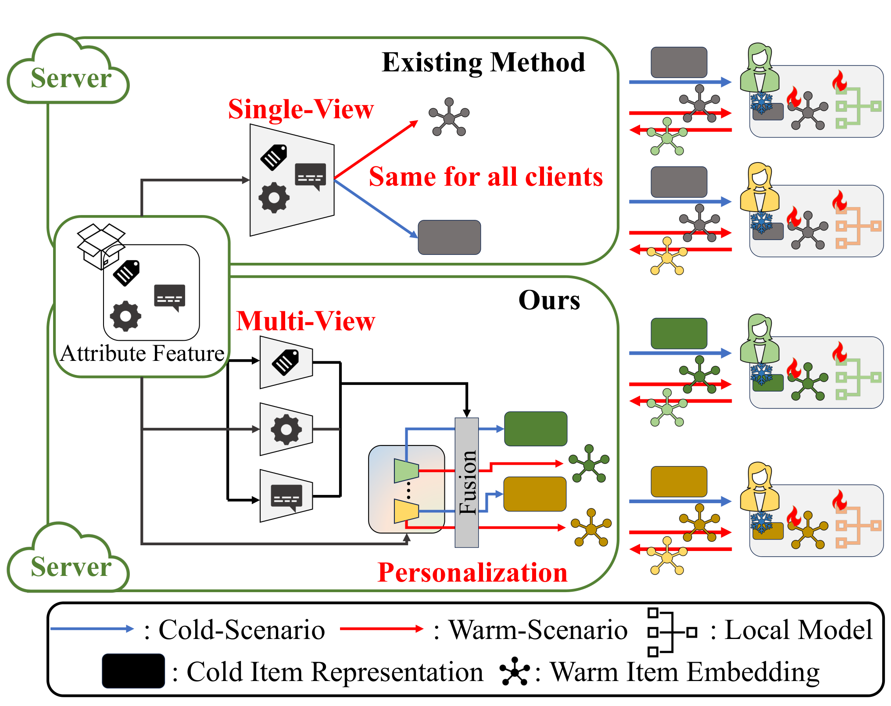

Contents · 7 sections
1What problem is it solving?2The big picture3Up close: how each step works and why4Experiments: is it really better?5Limitations as I see them6How a recommendation team could try this7Bottom lineSHARE
This paper is worth reading for teams working on privacy-preserving or on-device recommendation, but it is more a clearly designed prototype than a plan you can ship directly. It is worth reading because it breaks "new items in federated recommendation have no interactions and must get their vectors from attributes alone" into three concrete problems, and gives a cheap fix for each. The core idea in one sentence: the server fits, for each user, a private "attributes → vector" mapping with a single closed-form ridge regression, and averages it with a multi-view global mapping, so the same new item gets a different vector for different users. Key numbers: across 4 datasets, Recall@10 and the other @10 metrics are 3.3% to 7.6% higher than the strongest baseline; removing the personalized mapping drops CiteULike Recall@10 from 0.2929 to 0.2675; and with local differential privacy noise (ε=4), PMFRec still keeps 0.2274 on CiteULike, while the comparison method IFedNCF keeps only 0.0928.
What problem is it solving?
Federated recommendation (FedRec) keeps users' interaction records on their devices: each user is a client and sends only model parameters or updates to the server. This paper looks at a very practical case within it: new items arrive every day with no interactions at all, so their vectors must come from attributes alone (title, abstract, category and so on).
The difficulty is the "dual-sided constraint" the paper adopts: the server cannot see users' interactions or private parameters (user vectors, scoring network), and clients cannot see items' raw attributes, which are treated as the platform's commercial asset. So the "attributes → vector" step can only happen on the server, and the server does not know what each user likes.
The existing approach (the IFedRec framework; the paper's baselines IFedNCF and IPFedRec are two instances of it) learns one global mapping on the server, so every user gets the same new-item vector. The paper uses a toy paper-recommendation example to show what goes wrong:
| Illustrative | Drug | Machine learning | Graph | Chemistry | Recommendation |
|---|---|---|---|---|---|
| New paper A | ✓ | ✓ | ✓ | ||
| New paper B | ✓ | ✓ | |||
| New paper C | ✓ | ✓ | ✓ |
A user who prefers drug research should find A closer to B; a user who prefers machine learning and graphs should find A closer to C. A single global mapping can express only one similarity relation, so the differences between users are averaged away. This shows the problem has two layers: one is the lack of personalization, the other is that different items depend on different semantic facets, and forcing them into one space makes them interfere; the paper calls the latter "compositionality failure".
The third problem is communication. Existing methods send clients two item matrices every round (vectors learned from behavior and vectors generated from attributes) and add an alignment regularizer on the client to pull them together, which doubles communication and complicates local optimization.

The big picture
![PMFRec's overall framework. Left, the warm training phase: at the start of each round the server uses the multi-view encoder F_M and the personalized encoder h_u to produce Z_u and sends it to the client; the client does only ordinary recommendation training and sends back the updated item matrix; the server first fits the personalized mapping, then trains the multi-view encoder (orthogonality, load balancing, matching to the global behavior vectors). Right, the cold inference phase: the server uses the same two encoders to produce Z_u^C for new items, and the client ranks them with its own scoring network.](../../../figs/2026-09-01/personalization/2608.27826/fig2_framework.png)
| Step | Where | What it does | Why it is needed |
|---|---|---|---|
| 1. Deploy | Server | Generate Z_u from warm-item attributes with the two encoders and send it to user u | Only one matrix is sent, halving communication |
| 2. Local training | Client | Initialize the item matrix Q_u with Z_u and run ordinary binary recommendation training | Behavior signals are written directly into attribute-generated vectors, so no alignment regularizer is needed |
| 3. Aggregate | Server | Average incoming Q_u matrices as they arrive to get the global matrix Q_g | No need to store every user's matrix |
| 4. Personalized mapping | Server | Fit W_u with closed-form ridge regression so that "warm-item attributes × W_u" approximates Q_u | One mapping per user without running an optimizer for each |
| 5. Multi-view mapping | Server | Train K view encoders and a gate so the output approximates Q_g | Let different items emphasize different semantic facets |
| 6. Cold inference | Server + client | New-item vector = average of the personalized and multi-view mappings; the client scores it | New items with zero interactions still get a user-specific vector |
Up close: how each step works and why
Why does the client need no alignment regularizer? Existing methods have the client maintain both "behavior vectors" and "attribute vectors" and pull them together with a regularizer. PMFRec sends only one matrix, Z_u; the client uses it directly as the initial item vectors and then trains as usual with BCE (binary cross-entropy) on positives and 5× negatives. Because training starts from attribute-generated vectors, gradient updates gradually write the behavior signal into the same vectors. The server then fits its mappings on these vectors, and attributes and behavior are merged on the server side.
How is the personalized mapping computed cheaply? The paper writes the mapping as h_u(X) = σ(X·W_u), where σ is an activation function (the paper does not say which, but it must be invertible). Fitting W_u by gradient descent would require one optimizer per user. The authors instead apply the inverse activation σ⁻¹ to Q_u, turning the problem into ordinary ridge regression with a closed-form solution: W_u = (XᵀX + λI)⁻¹ Xᵀ σ⁻¹(Q_u). The first part, (XᵀX + λI)⁻¹ Xᵀ, depends only on warm-item attributes and is shared by all users, so it is computed once; each new user then costs just one matrix multiplication.
A one-dimensional hand calculation. Illustration: 3 warm items have attributes x = 1, 2, 3; one user's inverse-activated targets are 1, 2, 2.5; λ=1. Σx² + λ = 14 + 1 = 15, Σx·t = 1 + 4 + 7.5 = 12.5, so W_u ≈ 0.83. Another user's targets are 3, 2, 1, giving Σx·t = 3 + 4 + 3 = 10 and W_u ≈ 0.67. Now a new item arrives with attribute x=4: the first user gets 3.33 and the second gets 2.67, so the same new item has two different values. This shows personalization comes from "each user's own warm-item vectors differ", while the shared factor 1/15 is computed only once. λ>0 also serves another purpose: the resulting W_u is not an exact interpolation, which the authors argue prevents a client holding W_u from recovering the attributes by straightforward linear algebra.
What does the multi-view encoder do? The server has K single-layer encoders, each mapping attributes to a vector, which amounts to reading the same attributes from K angles. A gating network produces K weights from the item's attributes (softmax), and the weighted sum gives the multi-view vector. Illustration: with K=2, a biology-leaning new paper gets gate scores 2 and 0, about 0.88 and 0.12 after softmax, so its vector is mostly decided by the "biology" view; a social-science paper gets the reverse and is mostly decided by the other view. Why not simply average the K views? Because then every item goes back to "all facets weigh the same", and compositionality failure is not solved.
The multi-view encoder is trained so its output approximates the global average matrix Q_g, with two extra constraints. The orthogonality loss targets "views learning the same thing": it averages each view's output over all warm items and penalizes the pairwise cosine similarity between these averages. The load-balancing loss targets "the gate using only a few views": it maximizes the entropy of the views' average weights, and the more even the weights, the higher the entropy.
How is the final vector put together? User u's vector for a new item is Z_u^C = ½ (h_u(X^C) + F_M(X^C)), meaning the personalized and multi-view mappings each count for half. The server sends it to the user, who ranks with their own scoring network.
How is W_u stored in deployment? The paper offers two modes: the server keeps each user's W_u, or it sends W_u back to the client right after computing it and keeps nothing, asking the client to upload it again next time. The first costs storage, the second costs communication.
Experiments: is it really better?
There are two datasets. CiteULike is a paper bookmarking site where items are papers, with attributes compressed from titles and abstracts into 300 dimensions; XING (job postings from the RecSys 2017 Challenge) is split into three subsets by number of users, the largest with 20,000 users. New items never take part in training, and evaluation ranks new items for each user, so what is measured is exactly zero-interaction cold start.
| Method | CiteULike R@10 | CiteULike N@10 | XING-5000 R@10 | XING-5000 N@10 |
|---|---|---|---|---|
| IFedNCF | 0.2774 | 0.2763 | 0.1429 | 0.1726 |
| IPFedRec | 0.2791 | 0.2792 | 0.1372 | 0.1650 |
| FedDCN (can use attributes directly) | 0.1728 | 0.1690 | 0.1080 | 0.1332 |
| PMFRec | 0.2929 | 0.3001 | 0.1530 | 0.1850 |
At @10, PMFRec is 3.3% to 7.6% above the strongest baseline, mostly significant under a paired t-test at p≤0.05. This shows that under the same dual-sided constraint, switching to a personalized plus multi-view mapping is consistently effective. Notably, methods like FedDCN that can read attributes directly do much worse; the authors' explanation is that attributes alone are not enough without preserving each user's preferences. The gain is not universal: XING-10000 NDCG@20 is 0.63% below the baseline.
The ablation answers "which part matters most":
| Variant | CiteULike R@10 | XING-5000 R@10 |
|---|---|---|
| Full PMFRec | 0.2929 | 0.1530 |
| Without personalized mapping | 0.2675 | 0.1367 |
| Personalized mapping only | 0.2656 | 0.1181 |
| Single view only | 0.2886 | 0.1498 |
| Without gate (plain average) | 0.2895 | 0.1523 |
This shows the personalized and global mappings are both indispensable, and dropping either one costs the most; multi-view and gating contribute far less, only 0.0043 and 0.0034 on CiteULike. The authors also measure the "zero-score user ratio", the share of users who hit no new item at all: on XING-5000, Z@10 falls from 30.30% for IFedNCF to 26.80%, which shows personalization lets more users hit at least one new item.
The most interesting experiment adds privacy noise. Local differential privacy (LDP) here means the client clips the item gradient and adds Gaussian noise before uploading; the smaller ε, the larger the noise:
| CiteULike R@10 | IFedNCF | IFedNCF with PMFRec's vectors | PMFRec |
|---|---|---|---|
| No noise | 0.2774 | 0.2954 | 0.2929 |
| ε=10 | 0.1785 | 0.1743 | 0.2432 |
| ε=4 | 0.0928 | 0.1088 | 0.2274 |
This shows PMFRec's advantage under noise comes mainly from removing the client alignment regularizer. In the regularized methods the gradient is made of a recommendation part and an alignment part, and the authors measured the two pointing in opposite directions much of the time. After clipping and noise, the recommendation signal is drowned out. PMFRec has only a recommendation gradient and is less affected by noise.
Limitations as I see them
First, without noise, the "send one set of vectors, no regularizer" design actually costs accuracy. Plugging PMFRec's personalized plus multi-view vectors into IFedNCF (still sending two sets, still regularized) gives XING-5000 R@10 of 0.1695, about 11% above PMFRec's 0.1530, and it is slightly higher on CiteULike too. The paper puts this variant in the "adaptability" section as evidence that the module works, but it also shows the main method's communication saving is paid for in accuracy. Nor does the paper report how many bytes are actually sent per round, so the communication benefit is not quantified.
Second, the scale is far from real systems. The largest dataset has only 20,000 users, with about 11,000 to 14,000 warm items, and every user participates in every round. Costs can be roughly estimated (assuming float32): on CiteULike each user receives a Z_u of about 3.5 MB every round, because it is the entire warm-item matrix; on XING each user's W_u is about 0.7 MB, so a hundred million users would need about 70 TB of storage. This means that once the item pool reaches millions and users reach hundreds of millions, sending the whole matrix and keeping one mapping per person are both impractical, and the paper does not discuss sending only a subset or sharing mappings.
Third, the privacy argument is weak. The server sees each user's uploaded Q_u and fits each user's W_u from it, which is itself a strong signal of user preference; the authors only argue that "without the user vector and scoring network, the server cannot fully reconstruct the preference function". Whether a client holding W_u can recover attributes is also addressed only with the qualitative point that "ridge regression is not exact interpolation", with no attack experiment. In addition, the activation σ is not specified, yet the inverse activation constrains the value range (for example, sigmoid can only be inverted for numbers between 0 and 1), so anyone reproducing it must handle this themselves.
How a recommendation team could try this
- The core idea is usable even without federation: for new-item cold start, replace the global mapping with each user's (or each user group's) own "attributes → vector" mapping. Try it first in a centralized system using the closed-form ridge solution, computing the shared factor once offline.
- With many users, do not store one mapping per person. First split users into a few hundred interest groups with one W each, watch how cold-start Recall and the zero-score user ratio change, then decide whether to go down to individuals.
- For multi-view plus gating, start with K=4 (the best value in the paper); if the gain is only a few thousandths, as in the paper's ablation, it is not worth adding.
- If the setting really is federated or on-device and differential privacy is required, borrow first the idea of "remove the client regularizer and keep only the recommendation gradient", and plot the quality curve at ε=4, 8 and 10.
- Before launch, work out the bytes sent per round and the mapping storage; with a large item pool, send only the subset of items relevant to each user.
Bottom line
PMFRec makes "each user's own cold-start mapping" cheap enough with one closed-form ridge regression, and personalization is its real source of gain; the multi-view part contributes little, single-representation exchange even loses slightly without noise, and its value shows up mainly once privacy noise is added.
| Dimension | Assessment |
|---|---|
| Importance of the problem | Medium. New-item cold start in federated recommendation is a real problem, but industrial use of federated recommendation is itself limited |
| Novelty of the method | Medium. The closed-form personalized mapping is clever; multi-view gating and orthogonality constraints are common practice |
| Experimental evidence | Medium. Ablations, significance tests, zero-score users and privacy-noise experiments are there; but the data is small, with no communication numbers and no attack experiments |
| Engineering cost | High. Per-user mapping storage or communication, plus sending the whole item matrix every round, are both heavy at scale |
| Worth trying? | The core idea is worth trying in centralized cold start, with group-level mappings to control cost |
| Where it fits | Cold-start recommendation with small to medium user counts, rich attributes and hard privacy requirements |
How did this read for you?
Hoot made a note. Thanks for the feedback.
One tap, no sign-in; tap again to undo. Only anonymous counts are kept, never who you are.
Discussion
Add experiment details, reproduction notes or a different take. Requires a GitHub sign-in.
Loading the discussion…